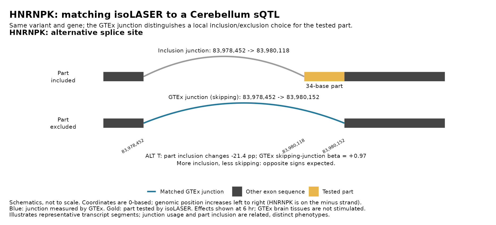

Last updated: 2026-10-28
Checks: 6 1
Knit directory: long_read_rna/
This reproducible R Markdown analysis was created with workflowr (version 1.7.0). The Checks tab describes the reproducibility checks that were applied when the results were created. The Past versions tab lists the development history.
The R Markdown file has unstaged changes. To know which version of
the R Markdown file created these results, you’ll want to first commit
it to the Git repo. If you’re still working on the analysis, you can
ignore this warning. When you’re finished, you can run
wflow_publish to commit the R Markdown file and build the
HTML.
Great job! The global environment was empty. Objects defined in the global environment can affect the analysis in your R Markdown file in unknown ways. For reproduciblity it’s best to always run the code in an empty environment.
The command set.seed(20260908) was run prior to running
the code in the R Markdown file. Setting a seed ensures that any results
that rely on randomness, e.g. subsampling or permutations, are
reproducible.
Great job! Recording the operating system, R version, and package versions is critical for reproducibility.
Nice! There were no cached chunks for this analysis, so you can be confident that you successfully produced the results during this run.
Great job! Using relative paths to the files within your workflowr project makes it easier to run your code on other machines.
Great! You are using Git for version control. Tracking code development and connecting the code version to the results is critical for reproducibility.
The results in this page were generated with repository version a43035e. See the Past versions tab to see a history of the changes made to the R Markdown and HTML files.
Note that you need to be careful to ensure that all relevant files for
the analysis have been committed to Git prior to generating the results
(you can use wflow_publish or
wflow_git_commit). workflowr only checks the R Markdown
file, but you know if there are other scripts or data files that it
depends on. Below is the status of the Git repository when the results
were generated:
Untracked files:
Untracked: analysis/isolaser_fdr_panel10nc_q010_hetcis.Rmd
Untracked: analysis/isolaser_fdr_reads10nc_q010_hetcis.Rmd
Unstaged changes:
Modified: analysis/isolaser_gtex_comparison_panel10nc_q010_hetcis.Rmd
Modified: analysis/isolaser_gtex_comparison_reads10nc_q010_hetcis.Rmd
Note that any generated files, e.g. HTML, png, CSS, etc., are not included in this status report because it is ok for generated content to have uncommitted changes.
These are the previous versions of the repository in which changes were
made to the R Markdown
(analysis/isolaser_gtex_comparison_panel10nc_q010_hetcis.Rmd)
and HTML
(docs/isolaser_gtex_comparison_panel10nc_q010_hetcis.html)
files. If you’ve configured a remote Git repository (see
?wflow_git_remote), click on the hyperlinks in the table
below to view the files as they were in that past version.
| File | Version | Author | Date | Message |
|---|---|---|---|---|
| Rmd | a43035e | XSun | 2026-10-28 | update |
This page compares transcript-based isoLASER without the clustering filter (FDR page) with GTEx v8 sQTLs in the nine brain tissues that have full summary statistics. As in the right panel of Fig. 3e of the isoLASER paper, we compare our allelic splicing effects (isoLASER ΔPSI) with GTEx sQTL effects (beta), using each event’s skipping junction. Its usage falls when the exonic part is included, so a negative correlation is expected.
Our associations come in three sets:
cis cutoff, computed in this run from the
panel-heterozygous donors only (≥ 10 reads each, ≥ 20 over those donors,
part ≥ 10 bp), with no ΔPSI or q cutoff. It replaces the paper’s cutoff
of the earlier
version, isoLASER’s joint output. That set also used variants absent
from the donors’ genotype panel, and pooled homozygous donors.The cutoffs are those of this run’s FDR page: |ΔPSI| ≥ 0.05 and
BH q < 0.10. The BH q-values were calculated over the full eligible
family of tested associations in each timepoint, before the
cis and |ΔPSI| display filters are applied, so the
effect-size screen changes no q-value. Earlier versions used q < 0.05
(page) and the
paper’s cutoff as the first set (page).
Example, HNRNPK. The C>T variant (chr9:83980154, 0-based) and the 34-base exonic part (gold) form an alternative splice site. GTEx measures the skipping junction (blue), which jumps over the part. At 6 hours, ALT changes part inclusion by -21.4 percentage points in this run. GTEx Cerebellum’s beta for the skipping junction is +0.97: opposite signs, as expected.

One tab per tissue. Rows are the three sets and columns the timepoints; each panel title gives the pairs, genes, Pearson R and p. Blue: GTEx nominal p < 0.05; grey: p ≥ 0.05. The line is a least-squares fit, drawn when a panel has 3 or more pairs.
Two tests, both on the skipping-junction pairs, for each set and tissue:
The binomial p-values are exploratory. The test assumes independent pairs, and they are not:
For example, after FDR the pairs with GTEx p < 0.05 are 17 pairs at 8 exonic parts in 8 genes (ARF4, ATP5MJ, DNTTIP2, HNRNPK, PFKP, SNHG5, TAX1BP1, ZFAND2A), over all nine tissues, and the binomial p treats them as 17 independent trials. A formal test would have to account for dependence within genes and loci, and for multiple comparisons.
In each tab:
Most of the cis set’s associations are tested in GTEx for the same variant and gene: 77.2–88.3% across tissues and timepoints (Cerebellum at 0 hr: 556 of 674, 82.5%, with 82 plotted pairs). Fewer form an annotated event with a matching skipping junction. For the paper’s cutoff on the earlier version, only a minority were tested, because many of its variants are not in the donors’ genotype panel.
Pairs matched
| Set | Timepoint | Our associations (SNVs) | Same variant and gene tested in GTEx | Plotted pairs | Genes |
|---|---|---|---|---|---|
| isoLASER cis, het donors | 0 hr | 674 | 556 | 82 | 53 |
| isoLASER cis, het donors | 1 hr | 1139 | 934 | 131 | 91 |
| isoLASER cis, het donors | 6 hr | 1110 | 905 | 122 | 82 |
| Before FDR | 0 hr | 440 | 401 | 65 | 44 |
| Before FDR | 1 hr | 702 | 653 | 104 | 73 |
| Before FDR | 6 hr | 666 | 604 | 100 | 70 |
| After FDR | 0 hr | 43 | 30 | 12 | 9 |
| After FDR | 1 hr | 75 | 65 | 22 | 12 |
| After FDR | 6 hr | 59 | 43 | 14 | 9 |
Correlation
| Set | Timepoint | Pairs | All: R (p) | All: expected sign | GTEx p < 1e-5: expected sign |
|---|---|---|---|---|---|
| isoLASER cis, het donors | 0 hr | 82 | 0.06 (0.59) | 36/82 | 5/7 |
| isoLASER cis, het donors | 1 hr | 131 | -0.01 (0.89) | 64/131 | 11/22 |
| isoLASER cis, het donors | 6 hr | 122 | -0.01 (0.93) | 64/122 | 10/14 |
| Before FDR | 0 hr | 65 | 0.16 (0.21) | 27/65 | 4/4 |
| Before FDR | 1 hr | 104 | -0.02 (0.85) | 57/104 | 10/16 |
| Before FDR | 6 hr | 100 | 0.02 (0.86) | 55/100 | 7/9 |
| After FDR | 0 hr | 12 | -0.15 (0.65) | 6/12 | 3/3 |
| After FDR | 1 hr | 22 | 0.03 (0.89) | 13/22 | 3/3 |
| After FDR | 6 hr | 14 | -0.07 (0.81) | 6/14 | 3/3 |
Sign consistency (pairs with GTEx p < 0.05; the binomial p-values are exploratory)
| Set | Timepoint | Pairs | Consistent | Consistent (%) | Binomial p, two-sided | Binomial p, one-sided |
|---|---|---|---|---|---|---|
| isoLASER cis, het donors | 0 hr | 19 | 10 | 53 | 1 | 0.5 |
| isoLASER cis, het donors | 1 hr | 44 | 19 | 43 | 0.45 | 0.85 |
| isoLASER cis, het donors | 6 hr | 29 | 15 | 52 | 1 | 0.5 |
| isoLASER cis, het donors | All timepoints, each pair once | 65 | 33 | 51 | 1 | 0.5 |
| Before FDR | 0 hr | 13 | 7 | 54 | 1 | 0.5 |
| Before FDR | 1 hr | 34 | 17 | 50 | 1 | 0.57 |
| Before FDR | 6 hr | 21 | 11 | 52 | 1 | 0.5 |
| Before FDR | All timepoints, each pair once | 52 | 29 | 56 | 0.49 | 0.24 |
| After FDR | 0 hr | 4 | 3 | 75 | 0.62 | 0.31 |
| After FDR | 1 hr | 7 | 3 | 43 | 1 | 0.77 |
| After FDR | 6 hr | 7 | 3 | 43 | 1 | 0.77 |
| After FDR | All timepoints, each pair once | 8 | 4 | 50 | 1 | 0.64 |
Pairs matched
| Set | Timepoint | Our associations (SNVs) | Same variant and gene tested in GTEx | Plotted pairs | Genes |
|---|---|---|---|---|---|
| isoLASER cis, het donors | 0 hr | 674 | 551 | 83 | 54 |
| isoLASER cis, het donors | 1 hr | 1139 | 934 | 132 | 94 |
| isoLASER cis, het donors | 6 hr | 1110 | 910 | 128 | 85 |
| Before FDR | 0 hr | 440 | 396 | 65 | 44 |
| Before FDR | 1 hr | 702 | 654 | 105 | 76 |
| Before FDR | 6 hr | 666 | 612 | 105 | 72 |
| After FDR | 0 hr | 43 | 30 | 11 | 8 |
| After FDR | 1 hr | 75 | 65 | 21 | 11 |
| After FDR | 6 hr | 59 | 42 | 14 | 9 |
Correlation
| Set | Timepoint | Pairs | All: R (p) | All: expected sign | GTEx p < 1e-5: expected sign |
|---|---|---|---|---|---|
| isoLASER cis, het donors | 0 hr | 83 | 0.07 (0.5) | 41/83 | 4/5 |
| isoLASER cis, het donors | 1 hr | 132 | -0.05 (0.58) | 72/132 | 9/13 |
| isoLASER cis, het donors | 6 hr | 128 | 0.01 (0.95) | 69/128 | 6/7 |
| Before FDR | 0 hr | 65 | 0.11 (0.38) | 32/65 | 4/5 |
| Before FDR | 1 hr | 105 | -0.06 (0.51) | 62/105 | 9/11 |
| Before FDR | 6 hr | 105 | 0.02 (0.84) | 58/105 | 6/7 |
| After FDR | 0 hr | 11 | -0.19 (0.57) | 6/11 | 3/3 |
| After FDR | 1 hr | 21 | 0.09 (0.7) | 11/21 | 3/3 |
| After FDR | 6 hr | 14 | -0.06 (0.83) | 6/14 | 3/3 |
Sign consistency (pairs with GTEx p < 0.05; the binomial p-values are exploratory)
| Set | Timepoint | Pairs | Consistent | Consistent (%) | Binomial p, two-sided | Binomial p, one-sided |
|---|---|---|---|---|---|---|
| isoLASER cis, het donors | 0 hr | 17 | 9 | 53 | 1 | 0.5 |
| isoLASER cis, het donors | 1 hr | 44 | 21 | 48 | 0.88 | 0.67 |
| isoLASER cis, het donors | 6 hr | 32 | 15 | 47 | 0.86 | 0.7 |
| isoLASER cis, het donors | All timepoints, each pair once | 65 | 31 | 48 | 0.8 | 0.69 |
| Before FDR | 0 hr | 14 | 8 | 57 | 0.79 | 0.4 |
| Before FDR | 1 hr | 33 | 17 | 52 | 1 | 0.5 |
| Before FDR | 6 hr | 25 | 12 | 48 | 1 | 0.65 |
| Before FDR | All timepoints, each pair once | 51 | 27 | 53 | 0.78 | 0.39 |
| After FDR | 0 hr | 4 | 3 | 75 | 0.62 | 0.31 |
| After FDR | 1 hr | 12 | 6 | 50 | 1 | 0.61 |
| After FDR | 6 hr | 8 | 3 | 38 | 0.73 | 0.86 |
| After FDR | All timepoints, each pair once | 13 | 7 | 54 | 1 | 0.5 |
Pairs matched
| Set | Timepoint | Our associations (SNVs) | Same variant and gene tested in GTEx | Plotted pairs | Genes |
|---|---|---|---|---|---|
| isoLASER cis, het donors | 0 hr | 674 | 595 | 76 | 51 |
| isoLASER cis, het donors | 1 hr | 1139 | 956 | 123 | 88 |
| isoLASER cis, het donors | 6 hr | 1110 | 951 | 109 | 77 |
| Before FDR | 0 hr | 440 | 404 | 57 | 40 |
| Before FDR | 1 hr | 702 | 644 | 97 | 71 |
| Before FDR | 6 hr | 666 | 612 | 88 | 65 |
| After FDR | 0 hr | 43 | 33 | 10 | 7 |
| After FDR | 1 hr | 75 | 67 | 20 | 11 |
| After FDR | 6 hr | 59 | 48 | 12 | 7 |
Correlation
| Set | Timepoint | Pairs | All: R (p) | All: expected sign | GTEx p < 1e-5: expected sign |
|---|---|---|---|---|---|
| isoLASER cis, het donors | 0 hr | 76 | 0.06 (0.63) | 40/76 | 3/5 |
| isoLASER cis, het donors | 1 hr | 123 | 0.04 (0.64) | 60/123 | 8/17 |
| isoLASER cis, het donors | 6 hr | 109 | 0.07 (0.46) | 47/109 | 8/9 |
| Before FDR | 0 hr | 57 | 0.19 (0.15) | 31/57 | 2/2 |
| Before FDR | 1 hr | 97 | 0.06 (0.54) | 52/97 | 7/12 |
| Before FDR | 6 hr | 88 | 0.15 (0.16) | 36/88 | 5/6 |
| After FDR | 0 hr | 10 | -0.03 (0.93) | 5/10 | 2/2 |
| After FDR | 1 hr | 20 | 0.33 (0.15) | 8/20 | 2/2 |
| After FDR | 6 hr | 12 | 0.16 (0.62) | 4/12 | 2/2 |
Sign consistency (pairs with GTEx p < 0.05; the binomial p-values are exploratory)
| Set | Timepoint | Pairs | Consistent | Consistent (%) | Binomial p, two-sided | Binomial p, one-sided |
|---|---|---|---|---|---|---|
| isoLASER cis, het donors | 0 hr | 14 | 6 | 43 | 0.79 | 0.79 |
| isoLASER cis, het donors | 1 hr | 40 | 20 | 50 | 1 | 0.56 |
| isoLASER cis, het donors | 6 hr | 30 | 13 | 43 | 0.58 | 0.82 |
| isoLASER cis, het donors | All timepoints, each pair once | 59 | 29 | 49 | 1 | 0.6 |
| Before FDR | 0 hr | 10 | 5 | 50 | 1 | 0.62 |
| Before FDR | 1 hr | 30 | 16 | 53 | 0.86 | 0.43 |
| Before FDR | 6 hr | 25 | 10 | 40 | 0.42 | 0.89 |
| Before FDR | All timepoints, each pair once | 49 | 25 | 51 | 1 | 0.5 |
| After FDR | 0 hr | 4 | 3 | 75 | 0.62 | 0.31 |
| After FDR | 1 hr | 7 | 3 | 43 | 1 | 0.77 |
| After FDR | 6 hr | 7 | 3 | 43 | 1 | 0.77 |
| After FDR | All timepoints, each pair once | 8 | 4 | 50 | 1 | 0.64 |
Pairs matched
| Set | Timepoint | Our associations (SNVs) | Same variant and gene tested in GTEx | Plotted pairs | Genes |
|---|---|---|---|---|---|
| isoLASER cis, het donors | 0 hr | 674 | 555 | 72 | 48 |
| isoLASER cis, het donors | 1 hr | 1139 | 898 | 115 | 84 |
| isoLASER cis, het donors | 6 hr | 1110 | 873 | 108 | 77 |
| Before FDR | 0 hr | 440 | 401 | 55 | 39 |
| Before FDR | 1 hr | 702 | 644 | 95 | 71 |
| Before FDR | 6 hr | 666 | 599 | 87 | 65 |
| After FDR | 0 hr | 43 | 30 | 9 | 6 |
| After FDR | 1 hr | 75 | 64 | 16 | 10 |
| After FDR | 6 hr | 59 | 43 | 12 | 7 |
Correlation
| Set | Timepoint | Pairs | All: R (p) | All: expected sign | GTEx p < 1e-5: expected sign |
|---|---|---|---|---|---|
| isoLASER cis, het donors | 0 hr | 72 | -0.09 (0.44) | 39/72 | 4/6 |
| isoLASER cis, het donors | 1 hr | 115 | -0.01 (0.92) | 46/115 | 11/20 |
| isoLASER cis, het donors | 6 hr | 108 | -0.03 (0.73) | 46/108 | 9/11 |
| Before FDR | 0 hr | 55 | -0.08 (0.56) | 29/55 | 3/3 |
| Before FDR | 1 hr | 95 | -0.01 (0.9) | 41/95 | 10/14 |
| Before FDR | 6 hr | 87 | -0.00 (0.96) | 37/87 | 6/7 |
| After FDR | 0 hr | 9 | -0.39 (0.3) | 7/9 | 3/3 |
| After FDR | 1 hr | 16 | -0.02 (0.93) | 5/16 | 3/3 |
| After FDR | 6 hr | 12 | -0.19 (0.55) | 5/12 | 3/3 |
Sign consistency (pairs with GTEx p < 0.05; the binomial p-values are exploratory)
| Set | Timepoint | Pairs | Consistent | Consistent (%) | Binomial p, two-sided | Binomial p, one-sided |
|---|---|---|---|---|---|---|
| isoLASER cis, het donors | 0 hr | 17 | 11 | 65 | 0.33 | 0.17 |
| isoLASER cis, het donors | 1 hr | 37 | 18 | 49 | 1 | 0.63 |
| isoLASER cis, het donors | 6 hr | 25 | 15 | 60 | 0.42 | 0.21 |
| isoLASER cis, het donors | All timepoints, each pair once | 58 | 30 | 52 | 0.9 | 0.45 |
| Before FDR | 0 hr | 13 | 10 | 77 | 0.092 | 0.046 |
| Before FDR | 1 hr | 28 | 15 | 54 | 0.85 | 0.43 |
| Before FDR | 6 hr | 17 | 11 | 65 | 0.33 | 0.17 |
| Before FDR | All timepoints, each pair once | 46 | 26 | 57 | 0.46 | 0.23 |
| After FDR | 0 hr | 6 | 6 | 100 | 0.031 | 0.016 |
| After FDR | 1 hr | 5 | 5 | 100 | 0.062 | 0.031 |
| After FDR | 6 hr | 5 | 5 | 100 | 0.062 | 0.031 |
| After FDR | All timepoints, each pair once | 7 | 7 | 100 | 0.016 | 0.0078 |
Pairs matched
| Set | Timepoint | Our associations (SNVs) | Same variant and gene tested in GTEx | Plotted pairs | Genes |
|---|---|---|---|---|---|
| isoLASER cis, het donors | 0 hr | 674 | 548 | 73 | 50 |
| isoLASER cis, het donors | 1 hr | 1139 | 892 | 119 | 87 |
| isoLASER cis, het donors | 6 hr | 1110 | 857 | 112 | 79 |
| Before FDR | 0 hr | 440 | 394 | 55 | 40 |
| Before FDR | 1 hr | 702 | 639 | 96 | 72 |
| Before FDR | 6 hr | 666 | 591 | 91 | 67 |
| After FDR | 0 hr | 43 | 27 | 10 | 7 |
| After FDR | 1 hr | 75 | 62 | 17 | 11 |
| After FDR | 6 hr | 59 | 40 | 13 | 8 |
Correlation
| Set | Timepoint | Pairs | All: R (p) | All: expected sign | GTEx p < 1e-5: expected sign |
|---|---|---|---|---|---|
| isoLASER cis, het donors | 0 hr | 73 | 0.09 (0.47) | 31/73 | 4/6 |
| isoLASER cis, het donors | 1 hr | 119 | 0.15 (0.098) | 46/119 | 9/18 |
| isoLASER cis, het donors | 6 hr | 112 | 0.03 (0.77) | 53/112 | 8/11 |
| Before FDR | 0 hr | 55 | 0.23 (0.092) | 22/55 | 3/3 |
| Before FDR | 1 hr | 96 | 0.22 (0.033) | 38/96 | 8/13 |
| Before FDR | 6 hr | 91 | 0.08 (0.42) | 41/91 | 5/7 |
| After FDR | 0 hr | 10 | -0.20 (0.58) | 4/10 | 3/3 |
| After FDR | 1 hr | 17 | 0.31 (0.23) | 7/17 | 3/3 |
| After FDR | 6 hr | 13 | 0.13 (0.67) | 5/13 | 3/3 |
Sign consistency (pairs with GTEx p < 0.05; the binomial p-values are exploratory)
| Set | Timepoint | Pairs | Consistent | Consistent (%) | Binomial p, two-sided | Binomial p, one-sided |
|---|---|---|---|---|---|---|
| isoLASER cis, het donors | 0 hr | 14 | 7 | 50 | 1 | 0.6 |
| isoLASER cis, het donors | 1 hr | 46 | 19 | 41 | 0.3 | 0.91 |
| isoLASER cis, het donors | 6 hr | 30 | 14 | 47 | 0.86 | 0.71 |
| isoLASER cis, het donors | All timepoints, each pair once | 64 | 30 | 47 | 0.71 | 0.73 |
| Before FDR | 0 hr | 10 | 6 | 60 | 0.75 | 0.38 |
| Before FDR | 1 hr | 36 | 16 | 44 | 0.62 | 0.8 |
| Before FDR | 6 hr | 22 | 10 | 45 | 0.83 | 0.74 |
| Before FDR | All timepoints, each pair once | 51 | 26 | 51 | 1 | 0.5 |
| After FDR | 0 hr | 4 | 3 | 75 | 0.62 | 0.31 |
| After FDR | 1 hr | 10 | 3 | 30 | 0.34 | 0.95 |
| After FDR | 6 hr | 8 | 3 | 38 | 0.73 | 0.86 |
| After FDR | All timepoints, each pair once | 11 | 4 | 36 | 0.55 | 0.89 |
Pairs matched
| Set | Timepoint | Our associations (SNVs) | Same variant and gene tested in GTEx | Plotted pairs | Genes |
|---|---|---|---|---|---|
| isoLASER cis, het donors | 0 hr | 674 | 585 | 72 | 47 |
| isoLASER cis, het donors | 1 hr | 1139 | 945 | 122 | 87 |
| isoLASER cis, het donors | 6 hr | 1110 | 925 | 111 | 76 |
| Before FDR | 0 hr | 440 | 396 | 54 | 37 |
| Before FDR | 1 hr | 702 | 635 | 96 | 70 |
| Before FDR | 6 hr | 666 | 598 | 88 | 63 |
| After FDR | 0 hr | 43 | 27 | 9 | 6 |
| After FDR | 1 hr | 75 | 62 | 20 | 10 |
| After FDR | 6 hr | 59 | 40 | 12 | 7 |
Correlation
| Set | Timepoint | Pairs | All: R (p) | All: expected sign | GTEx p < 1e-5: expected sign |
|---|---|---|---|---|---|
| isoLASER cis, het donors | 0 hr | 72 | 0.11 (0.34) | 37/72 | 1/3 |
| isoLASER cis, het donors | 1 hr | 122 | 0.08 (0.37) | 53/122 | 5/11 |
| isoLASER cis, het donors | 6 hr | 111 | 0.07 (0.46) | 56/111 | 6/8 |
| Before FDR | 0 hr | 54 | 0.27 (0.051) | 25/54 | none |
| Before FDR | 1 hr | 96 | 0.11 (0.28) | 44/96 | 4/6 |
| Before FDR | 6 hr | 88 | 0.15 (0.16) | 41/88 | 3/4 |
| After FDR | 0 hr | 9 | -0.13 (0.75) | 5/9 | none |
| After FDR | 1 hr | 20 | 0.36 (0.12) | 9/20 | none |
| After FDR | 6 hr | 12 | 0.23 (0.47) | 4/12 | 1/1 |
Sign consistency (pairs with GTEx p < 0.05; the binomial p-values are exploratory)
| Set | Timepoint | Pairs | Consistent | Consistent (%) | Binomial p, two-sided | Binomial p, one-sided |
|---|---|---|---|---|---|---|
| isoLASER cis, het donors | 0 hr | 16 | 6 | 38 | 0.45 | 0.89 |
| isoLASER cis, het donors | 1 hr | 38 | 17 | 45 | 0.63 | 0.79 |
| isoLASER cis, het donors | 6 hr | 31 | 15 | 48 | 1 | 0.64 |
| isoLASER cis, het donors | All timepoints, each pair once | 59 | 27 | 46 | 0.6 | 0.78 |
| Before FDR | 0 hr | 11 | 4 | 36 | 0.55 | 0.89 |
| Before FDR | 1 hr | 28 | 14 | 50 | 1 | 0.57 |
| Before FDR | 6 hr | 23 | 10 | 43 | 0.68 | 0.8 |
| Before FDR | All timepoints, each pair once | 45 | 22 | 49 | 1 | 0.62 |
| After FDR | 0 hr | 4 | 3 | 75 | 0.62 | 0.31 |
| After FDR | 1 hr | 10 | 4 | 40 | 0.75 | 0.83 |
| After FDR | 6 hr | 8 | 3 | 38 | 0.73 | 0.86 |
| After FDR | All timepoints, each pair once | 11 | 5 | 45 | 1 | 0.73 |
Pairs matched
| Set | Timepoint | Our associations (SNVs) | Same variant and gene tested in GTEx | Plotted pairs | Genes |
|---|---|---|---|---|---|
| isoLASER cis, het donors | 0 hr | 674 | 585 | 73 | 49 |
| isoLASER cis, het donors | 1 hr | 1139 | 921 | 118 | 85 |
| isoLASER cis, het donors | 6 hr | 1110 | 928 | 112 | 80 |
| Before FDR | 0 hr | 440 | 407 | 55 | 39 |
| Before FDR | 1 hr | 702 | 647 | 96 | 71 |
| Before FDR | 6 hr | 666 | 628 | 91 | 67 |
| After FDR | 0 hr | 43 | 33 | 9 | 6 |
| After FDR | 1 hr | 75 | 67 | 19 | 10 |
| After FDR | 6 hr | 59 | 48 | 11 | 6 |
Correlation
| Set | Timepoint | Pairs | All: R (p) | All: expected sign | GTEx p < 1e-5: expected sign |
|---|---|---|---|---|---|
| isoLASER cis, het donors | 0 hr | 73 | 0.12 (0.32) | 28/73 | 3/5 |
| isoLASER cis, het donors | 1 hr | 118 | 0.09 (0.35) | 49/118 | 8/16 |
| isoLASER cis, het donors | 6 hr | 112 | 0.01 (0.94) | 54/112 | 8/11 |
| Before FDR | 0 hr | 55 | 0.23 (0.096) | 21/55 | 2/2 |
| Before FDR | 1 hr | 96 | 0.12 (0.26) | 42/96 | 7/12 |
| Before FDR | 6 hr | 91 | 0.04 (0.72) | 43/91 | 5/7 |
| After FDR | 0 hr | 9 | -0.36 (0.34) | 5/9 | 2/2 |
| After FDR | 1 hr | 19 | 0.16 (0.52) | 9/19 | 2/2 |
| After FDR | 6 hr | 11 | 0.03 (0.93) | 4/11 | 3/3 |
Sign consistency (pairs with GTEx p < 0.05; the binomial p-values are exploratory)
| Set | Timepoint | Pairs | Consistent | Consistent (%) | Binomial p, two-sided | Binomial p, one-sided |
|---|---|---|---|---|---|---|
| isoLASER cis, het donors | 0 hr | 17 | 7 | 41 | 0.63 | 0.83 |
| isoLASER cis, het donors | 1 hr | 37 | 15 | 41 | 0.32 | 0.91 |
| isoLASER cis, het donors | 6 hr | 27 | 13 | 48 | 1 | 0.65 |
| isoLASER cis, het donors | All timepoints, each pair once | 55 | 25 | 45 | 0.59 | 0.79 |
| Before FDR | 0 hr | 10 | 5 | 50 | 1 | 0.62 |
| Before FDR | 1 hr | 29 | 13 | 45 | 0.71 | 0.77 |
| Before FDR | 6 hr | 20 | 10 | 50 | 1 | 0.59 |
| Before FDR | All timepoints, each pair once | 42 | 22 | 52 | 0.88 | 0.44 |
| After FDR | 0 hr | 4 | 3 | 75 | 0.62 | 0.31 |
| After FDR | 1 hr | 9 | 3 | 33 | 0.51 | 0.91 |
| After FDR | 6 hr | 8 | 3 | 38 | 0.73 | 0.86 |
| After FDR | All timepoints, each pair once | 10 | 4 | 40 | 0.75 | 0.83 |
Pairs matched
| Set | Timepoint | Our associations (SNVs) | Same variant and gene tested in GTEx | Plotted pairs | Genes |
|---|---|---|---|---|---|
| isoLASER cis, het donors | 0 hr | 674 | 560 | 79 | 53 |
| isoLASER cis, het donors | 1 hr | 1139 | 894 | 120 | 83 |
| isoLASER cis, het donors | 6 hr | 1110 | 885 | 110 | 77 |
| Before FDR | 0 hr | 440 | 404 | 60 | 42 |
| Before FDR | 1 hr | 702 | 641 | 97 | 68 |
| Before FDR | 6 hr | 666 | 603 | 89 | 65 |
| After FDR | 0 hr | 43 | 33 | 10 | 7 |
| After FDR | 1 hr | 75 | 66 | 21 | 11 |
| After FDR | 6 hr | 59 | 47 | 13 | 8 |
Correlation
| Set | Timepoint | Pairs | All: R (p) | All: expected sign | GTEx p < 1e-5: expected sign |
|---|---|---|---|---|---|
| isoLASER cis, het donors | 0 hr | 79 | 0.07 (0.54) | 37/79 | 4/6 |
| isoLASER cis, het donors | 1 hr | 120 | 0.10 (0.29) | 49/120 | 11/21 |
| isoLASER cis, het donors | 6 hr | 110 | -0.00 (0.96) | 45/110 | 9/11 |
| Before FDR | 0 hr | 60 | 0.17 (0.18) | 26/60 | 3/3 |
| Before FDR | 1 hr | 97 | 0.13 (0.21) | 40/97 | 10/17 |
| Before FDR | 6 hr | 89 | 0.04 (0.71) | 35/89 | 6/8 |
| After FDR | 0 hr | 10 | -0.15 (0.68) | 3/10 | 3/3 |
| After FDR | 1 hr | 21 | 0.17 (0.45) | 6/21 | 3/3 |
| After FDR | 6 hr | 13 | -0.02 (0.94) | 3/13 | 3/3 |
Sign consistency (pairs with GTEx p < 0.05; the binomial p-values are exploratory)
| Set | Timepoint | Pairs | Consistent | Consistent (%) | Binomial p, two-sided | Binomial p, one-sided |
|---|---|---|---|---|---|---|
| isoLASER cis, het donors | 0 hr | 17 | 5 | 29 | 0.14 | 0.98 |
| isoLASER cis, het donors | 1 hr | 41 | 19 | 46 | 0.76 | 0.73 |
| isoLASER cis, het donors | 6 hr | 28 | 15 | 54 | 0.85 | 0.43 |
| isoLASER cis, het donors | All timepoints, each pair once | 62 | 29 | 47 | 0.7 | 0.74 |
| Before FDR | 0 hr | 13 | 4 | 31 | 0.27 | 0.95 |
| Before FDR | 1 hr | 30 | 14 | 47 | 0.86 | 0.71 |
| Before FDR | 6 hr | 21 | 11 | 52 | 1 | 0.5 |
| Before FDR | All timepoints, each pair once | 47 | 23 | 49 | 1 | 0.61 |
| After FDR | 0 hr | 4 | 3 | 75 | 0.62 | 0.31 |
| After FDR | 1 hr | 8 | 3 | 38 | 0.73 | 0.86 |
| After FDR | 6 hr | 7 | 3 | 43 | 1 | 0.77 |
| After FDR | All timepoints, each pair once | 9 | 4 | 44 | 1 | 0.75 |
Pairs matched
| Set | Timepoint | Our associations (SNVs) | Same variant and gene tested in GTEx | Plotted pairs | Genes |
|---|---|---|---|---|---|
| isoLASER cis, het donors | 0 hr | 674 | 549 | 74 | 48 |
| isoLASER cis, het donors | 1 hr | 1139 | 940 | 121 | 83 |
| isoLASER cis, het donors | 6 hr | 1110 | 931 | 109 | 76 |
| Before FDR | 0 hr | 440 | 359 | 56 | 38 |
| Before FDR | 1 hr | 702 | 634 | 95 | 66 |
| Before FDR | 6 hr | 666 | 604 | 87 | 63 |
| After FDR | 0 hr | 43 | 30 | 9 | 6 |
| After FDR | 1 hr | 75 | 64 | 20 | 10 |
| After FDR | 6 hr | 59 | 44 | 12 | 7 |
Correlation
| Set | Timepoint | Pairs | All: R (p) | All: expected sign | GTEx p < 1e-5: expected sign |
|---|---|---|---|---|---|
| isoLASER cis, het donors | 0 hr | 74 | -0.07 (0.58) | 35/74 | 3/5 |
| isoLASER cis, het donors | 1 hr | 121 | 0.06 (0.53) | 55/121 | 7/14 |
| isoLASER cis, het donors | 6 hr | 109 | 0.00 (0.97) | 52/109 | 8/10 |
| Before FDR | 0 hr | 56 | -0.05 (0.74) | 28/56 | 2/2 |
| Before FDR | 1 hr | 95 | 0.09 (0.38) | 44/95 | 6/9 |
| Before FDR | 6 hr | 87 | 0.07 (0.53) | 42/87 | 5/6 |
| After FDR | 0 hr | 9 | -0.47 (0.2) | 7/9 | 2/2 |
| After FDR | 1 hr | 20 | 0.07 (0.77) | 10/20 | 2/2 |
| After FDR | 6 hr | 12 | -0.11 (0.74) | 6/12 | 3/3 |
Sign consistency (pairs with GTEx p < 0.05; the binomial p-values are exploratory)
| Set | Timepoint | Pairs | Consistent | Consistent (%) | Binomial p, two-sided | Binomial p, one-sided |
|---|---|---|---|---|---|---|
| isoLASER cis, het donors | 0 hr | 7 | 4 | 57 | 1 | 0.5 |
| isoLASER cis, het donors | 1 hr | 35 | 18 | 51 | 1 | 0.5 |
| isoLASER cis, het donors | 6 hr | 29 | 16 | 55 | 0.71 | 0.36 |
| isoLASER cis, het donors | All timepoints, each pair once | 55 | 28 | 51 | 1 | 0.5 |
| Before FDR | 0 hr | 3 | 3 | 100 | 0.25 | 0.12 |
| Before FDR | 1 hr | 26 | 15 | 58 | 0.56 | 0.28 |
| Before FDR | 6 hr | 23 | 12 | 52 | 1 | 0.5 |
| Before FDR | All timepoints, each pair once | 43 | 24 | 56 | 0.54 | 0.27 |
| After FDR | 0 hr | 3 | 3 | 100 | 0.25 | 0.12 |
| After FDR | 1 hr | 3 | 3 | 100 | 0.25 | 0.12 |
| After FDR | 6 hr | 3 | 3 | 100 | 0.25 | 0.12 |
| After FDR | All timepoints, each pair once | 4 | 4 | 100 | 0.12 | 0.062 |
| Tissue | isoLASER cis, het donors | Before FDR | After FDR |
|---|---|---|---|
| Cerebellum | 33/65 (0.5) | 29/52 (0.24) | 4/8 (0.64) |
| Cerebellar Hemisphere | 31/65 (0.69) | 27/51 (0.39) | 7/13 (0.5) |
| Caudate basal ganglia | 29/59 (0.6) | 25/49 (0.5) | 4/8 (0.64) |
| Cortex | 30/58 (0.45) | 26/46 (0.23) | 7/7 (0.0078) |
| Frontal Cortex BA9 | 30/64 (0.73) | 26/51 (0.5) | 4/11 (0.89) |
| Hippocampus | 27/59 (0.78) | 22/45 (0.62) | 5/11 (0.73) |
| Hypothalamus | 25/55 (0.79) | 22/42 (0.44) | 4/10 (0.83) |
| Nucleus accumbens basal ganglia | 29/62 (0.74) | 23/47 (0.61) | 4/9 (0.75) |
| Putamen basal ganglia | 28/55 (0.5) | 24/43 (0.27) | 4/4 (0.062) |
Sign consistency with each pair once, by tissue: consistent pairs / pairs with GTEx p < 0.05, with the one-sided binomial p (exploratory; see How the testing works). Across the nine tissues, the share of consistent pairs is 45–52% for the cis set, 49–57% before FDR and 36–100% after FDR. The tissues share many GTEx donors, so they are not independent replications.
Download the points, correlation statistics, sign consistency and matching counts.
Reproduce with long_read_RNA/10.isolaser_permutation/:
27.gtex_fdr_comparison.py --prepare-full-cerebellum --cis-het,
... --min-dpsi 0.05 --before-fdr and
... --min-dpsi 0.05 --max-q 0.10
(ADAPTIVE_RULE=panel10nc) for the three sets; then
56.gtex_brain_tissues.sbatch (extraction, one task per
tissue), and with AFTER_Q=0.10 and
PAPER_SET=hetcis:
55.gtex_brain_tissues.R summarize,
58.gtex_pi1.R and 57.gtex_gene_venn.R.
For each association in the cis and before-FDR sets, we take the GTEx p-value of its event’s skipping junction for our SNV, as in the scatter plots, and estimate Storey’s π1 from these p-values, for each timepoint separately. When GTEx tests several skipping junctions of the event (2% of matched associations), we use the one shared by the most annotated transcripts that skip the part, chosen without looking at GTEx p-values. This is exploratory.
What it estimates: GTEx p-values of associations with no effect in GTEx are spread evenly between 0 and 1, and real effects tend to produce smaller p-values when GTEx has sufficient power. The estimator measures the flat part, π0, from the larger p-values, and π1 = 1 − π0 is the estimated proportion of non-null associations among matched GTEx tests. Limited power can make weak non-null effects look null and underestimate π1, so π1 cannot distinguish false positives in our study from context-specific effects or effects that GTEx has insufficient power to detect. It also ignores direction, which is checked under Testing.
After FDR: only 9–22 associations are matched per tissue and timepoint, too few for a stable π1: one p-value crossing 0.5 moves it by 2/n, 0.22 at n = 9. Each tab lists them instead, with their GTEx p-value and direction. Expected direction means GTEx’s beta has the opposite sign to our ΔPSI at every timepoint where the association is reported, as in the sign-consistency test.
π1: cis set and before FDR
| Set | Timepoint | Associations | Matched in GTEx | GTEx p < 0.05 | π1 | Estimator |
|---|---|---|---|---|---|---|
| isoLASER cis, het donors | 0 hr | 674 | 79 | 24% | 0.53 | smoother |
| isoLASER cis, het donors | 1 hr | 1,139 | 130 | 33% | 0.56 | smoother |
| isoLASER cis, het donors | 6 hr | 1,110 | 121 | 23% | 0.47 | smoother |
| Before FDR | 0 hr | 440 | 62 | 21% | 0.46 | smoother |
| Before FDR | 1 hr | 702 | 103 | 32% | 0.61 | smoother |
| Before FDR | 6 hr | 666 | 99 | 20% | 0.34 | smoother |
Estimator: how qvalue::pi0est estimated
π0. smoother (its default, used with 30 or
more p-values): π0 is computed at each λ from 0.05 to 0.95 as
#(p > λ) / (n(1 − λ)), the share of p-values above λ scaled to the
whole range; a spline is fitted through these values and read at λ =
0.95. λ = 0.5 (fewer than 30 p-values, too few for the
spline): π1 = max(0, 1 − #(p > 0.5) / (0.5 n)), so one
p-value moves it by 2/n.
After FDR: each matched association
Matched at 0, 1 and 6 hr: 12 of 43, 22 of 75 and 14 of 59 associations. Of the 26 distinct ones, 8 have GTEx p < 0.05, 4 of them in the expected direction.
| Gene | Variant | Exonic part | Reported at | ΔPSI | GTEx p | GTEx beta | Expected direction |
|---|---|---|---|---|---|---|---|
| HNRNPK | chr9:83980154:C>T | chr9:83980118-83980152:- | 0 hr, 1 hr, 6 hr | -0.20, -0.18, -0.21 | 8.2e-27 | +0.97 | yes |
| HNRNPK | chr9:83978398:G>C | chr9:83980118-83980152:- | 0 hr, 1 hr, 6 hr | -0.11, -0.08, -0.12 | 3.2e-21 | +0.92 | yes |
| SNHG5 | chr6:85678169:G>T | chr6:85677794-85677868:- | 6 hr | +0.20 | 8.9e-15 | -0.69 | yes |
| ATP5MJ | chr14:103915164:T>C | chr14:103914478-103914633:- | 0 hr, 1 hr | +0.08, +0.10 | 6.2e-11 | -1.02 | yes |
| ZFAND2A | chr7:1159995:T>C | chr7:1153224-1153241:- | 0 hr, 1 hr, 6 hr | +0.52, +0.40, +0.49 | 0.0032 | +0.30 | no |
| ZFAND2A | chr7:1160150:C>A | chr7:1153224-1153241:- | 1 hr, 6 hr | +0.60, +0.63 | 0.0032 | +0.30 | no |
| ZFAND2A | chr7:1160154:G>C | chr7:1153224-1153241:- | 1 hr, 6 hr | +0.66, +0.66 | 0.0032 | +0.30 | no |
| ZFAND2A | chr7:1160153:G>C | chr7:1153224-1153241:- | 1 hr, 6 hr | +0.66, +0.66 | 0.0065 | +0.30 | no |
| PFKP | chr10:3136715:T>C | chr10:3125096-3125249:+ | 1 hr | +0.16 | 0.055 | -0.15 | yes |
| PFKP | chr10:3136622:G>C | chr10:3125096-3125249:+ | 1 hr | +0.15 | 0.064 | -0.19 | yes |
| RPS5 | chr19:58394795:T>C | chr19:58388417-58388480:+ | 0 hr, 1 hr, 6 hr | +0.49, +0.53, +0.56 | 0.15 | +0.12 | no |
| PFKP | chr10:3129928:C>T | chr10:3125096-3125249:+ | 1 hr | +0.32 | 0.16 | -0.10 | yes |
| DNTTIP2 | chr1:93877466:A>G | chr1:93875665-93875783:- | 1 hr, 6 hr | -0.47, -0.39 | 0.18 | -0.12 | no |
| PFKP | chr10:3136793:T>C | chr10:3125096-3125249:+ | 1 hr | +0.13 | 0.21 | -0.09 | yes |
| ANKRD36B | chr2:97547720:C>G | chr2:97576413-97576446:- | 0 hr, 1 hr, 6 hr | -0.48, -0.30, -0.36 | 0.21 | -0.13 | no |
| ANKRD36C | chr2:95991826:A>G | chr2:95938828-95938901:- | 0 hr | +0.22 | 0.25 | +0.09 | no |
| DNTTIP2 | chr1:93879159:C>T | chr1:93875665-93875783:- | 1 hr | -0.35 | 0.42 | -0.08 | no |
| CNIH1 | chr14:54427577:T>C | chr14:54436078-54436126:- | 0 hr | -0.10 | 0.43 | -0.11 | no |
| TAX1BP1 | chr7:27740145:G>A | chr7:27816394-27816520:+ | 1 hr | +0.68 | 0.54 | -0.07 | yes |
| NDUFA2 | chr5:140647630:T>C | chr5:140645678-140645725:- | 1 hr | -0.24 | 0.59 | +0.04 | yes |
| CHORDC1 | chr11:90223037:G>A | chr11:90211318-90211335:- | 0 hr, 1 hr, 6 hr | +0.48, +0.52, +0.54 | 0.65 | +0.08 | no |
| LEPROT | chr1:65420714:T>C | chr1:65421327-65421459:+ | 1 hr | +0.37 | 0.79 | -0.03 | yes |
| PFKP | chr10:3136793:T>C | chr10:3100920-3101000:+ | 1 hr, 6 hr | +0.14, +0.13 | 0.85 | -0.02 | yes |
| ARF4 | chr3:57571396:A>G | chr3:57584007-57584032:- | 0 hr, 1 hr, 6 hr | +0.49, +0.56, +0.49 | 0.89 | -0.02 | yes |
| ARF4 | chr3:57571432:A>G | chr3:57584007-57584032:- | 0 hr, 1 hr, 6 hr | +0.47, +0.53, +0.47 | 0.89 | -0.02 | yes |
| ARF4 | chr3:57571406:T>A | chr3:57584007-57584032:- | 0 hr | +0.49 | 0.89 | -0.02 | yes |
π1: cis set and before FDR
| Set | Timepoint | Associations | Matched in GTEx | GTEx p < 0.05 | π1 | Estimator |
|---|---|---|---|---|---|---|
| isoLASER cis, het donors | 0 hr | 674 | 80 | 21% | 0.00 | smoother |
| isoLASER cis, het donors | 1 hr | 1,139 | 132 | 33% | 0.06 | smoother |
| isoLASER cis, het donors | 6 hr | 1,110 | 126 | 25% | 0.00 | smoother |
| Before FDR | 0 hr | 440 | 62 | 23% | 0.00 | smoother |
| Before FDR | 1 hr | 702 | 105 | 31% | 0.21 | smoother |
| Before FDR | 6 hr | 666 | 103 | 23% | 0.07 | smoother |
Estimator: how qvalue::pi0est estimated
π0. smoother (its default, used with 30 or
more p-values): π0 is computed at each λ from 0.05 to 0.95 as
#(p > λ) / (n(1 − λ)), the share of p-values above λ scaled to the
whole range; a spline is fitted through these values and read at λ =
0.95. λ = 0.5 (fewer than 30 p-values, too few for the
spline): π1 = max(0, 1 − #(p > 0.5) / (0.5 n)), so one
p-value moves it by 2/n.
After FDR: each matched association
Matched at 0, 1 and 6 hr: 11 of 43, 21 of 75 and 14 of 59 associations. Of the 24 distinct ones, 13 have GTEx p < 0.05, 7 of them in the expected direction.
| Gene | Variant | Exonic part | Reported at | ΔPSI | GTEx p | GTEx beta | Expected direction |
|---|---|---|---|---|---|---|---|
| HNRNPK | chr9:83980154:C>T | chr9:83980118-83980152:- | 0 hr, 1 hr, 6 hr | -0.20, -0.18, -0.21 | 2.2e-22 | +0.97 | yes |
| HNRNPK | chr9:83978398:G>C | chr9:83980118-83980152:- | 0 hr, 1 hr, 6 hr | -0.11, -0.08, -0.12 | 4e-18 | +0.92 | yes |
| SNHG5 | chr6:85678169:G>T | chr6:85677794-85677868:- | 6 hr | +0.20 | 8.2e-15 | -0.78 | yes |
| ATP5MJ | chr14:103915164:T>C | chr14:103914478-103914633:- | 0 hr, 1 hr | +0.08, +0.10 | 1.3e-11 | -1.06 | yes |
| PFKP | chr10:3129928:C>T | chr10:3125096-3125249:+ | 1 hr | +0.32 | 0.0011 | -0.21 | yes |
| PFKP | chr10:3136622:G>C | chr10:3125096-3125249:+ | 1 hr | +0.15 | 0.0015 | -0.28 | yes |
| DNTTIP2 | chr1:93877466:A>G | chr1:93875665-93875783:- | 1 hr, 6 hr | -0.47, -0.39 | 0.0022 | -0.25 | no |
| DNTTIP2 | chr1:93879159:C>T | chr1:93875665-93875783:- | 1 hr | -0.35 | 0.0027 | -0.25 | no |
| ZFAND2A | chr7:1159995:T>C | chr7:1153224-1153241:- | 0 hr, 1 hr, 6 hr | +0.52, +0.40, +0.49 | 0.0045 | +0.29 | no |
| ZFAND2A | chr7:1160150:C>A | chr7:1153224-1153241:- | 1 hr, 6 hr | +0.60, +0.63 | 0.0045 | +0.29 | no |
| ZFAND2A | chr7:1160154:G>C | chr7:1153224-1153241:- | 1 hr, 6 hr | +0.66, +0.66 | 0.0045 | +0.29 | no |
| ZFAND2A | chr7:1160153:G>C | chr7:1153224-1153241:- | 1 hr, 6 hr | +0.66, +0.66 | 0.0095 | +0.29 | no |
| PFKP | chr10:3136793:T>C | chr10:3125096-3125249:+ | 1 hr | +0.13 | 0.012 | -0.16 | yes |
| RPS5 | chr19:58394795:T>C | chr19:58388417-58388480:+ | 0 hr, 1 hr, 6 hr | +0.49, +0.53, +0.56 | 0.055 | +0.15 | no |
| NDUFA2 | chr5:140647630:T>C | chr5:140645678-140645725:- | 1 hr | -0.24 | 0.062 | +0.19 | yes |
| PFKP | chr10:3136715:T>C | chr10:3125096-3125249:+ | 1 hr | +0.16 | 0.17 | -0.10 | yes |
| TAX1BP1 | chr7:27740145:G>A | chr7:27816394-27816520:+ | 1 hr | +0.68 | 0.29 | +0.12 | no |
| CNIH1 | chr14:54427577:T>C | chr14:54436078-54436126:- | 0 hr | -0.10 | 0.55 | +0.09 | yes |
| ARF4 | chr3:57571432:A>G | chr3:57584007-57584032:- | 0 hr, 1 hr, 6 hr | +0.47, +0.53, +0.47 | 0.58 | +0.08 | no |
| ARF4 | chr3:57571396:A>G | chr3:57584007-57584032:- | 0 hr, 1 hr, 6 hr | +0.49, +0.56, +0.49 | 0.58 | +0.08 | no |
| ARF4 | chr3:57571406:T>A | chr3:57584007-57584032:- | 0 hr | +0.49 | 0.58 | +0.08 | no |
| PFKP | chr10:3136793:T>C | chr10:3100920-3101000:+ | 1 hr, 6 hr | +0.14, +0.13 | 0.96 | -0.00 | yes |
| CHORDC1 | chr11:90223037:G>A | chr11:90211318-90211335:- | 0 hr, 1 hr, 6 hr | +0.48, +0.52, +0.54 | 0.97 | -0.01 | yes |
| ANKRD36B | chr2:97547720:C>G | chr2:97576413-97576446:- | 0 hr, 1 hr, 6 hr | -0.48, -0.30, -0.36 | 0.99 | +0.00 | yes |
π1: cis set and before FDR
| Set | Timepoint | Associations | Matched in GTEx | GTEx p < 0.05 | π1 | Estimator |
|---|---|---|---|---|---|---|
| isoLASER cis, het donors | 0 hr | 674 | 73 | 19% | 0.75 | smoother |
| isoLASER cis, het donors | 1 hr | 1,139 | 122 | 33% | 0.76 | smoother |
| isoLASER cis, het donors | 6 hr | 1,110 | 108 | 28% | 0.39 | smoother |
| Before FDR | 0 hr | 440 | 54 | 19% | 0.64 | smoother |
| Before FDR | 1 hr | 702 | 96 | 31% | 0.73 | smoother |
| Before FDR | 6 hr | 666 | 87 | 28% | 0.26 | smoother |
Estimator: how qvalue::pi0est estimated
π0. smoother (its default, used with 30 or
more p-values): π0 is computed at each λ from 0.05 to 0.95 as
#(p > λ) / (n(1 − λ)), the share of p-values above λ scaled to the
whole range; a spline is fitted through these values and read at λ =
0.95. λ = 0.5 (fewer than 30 p-values, too few for the
spline): π1 = max(0, 1 − #(p > 0.5) / (0.5 n)), so one
p-value moves it by 2/n.
After FDR: each matched association
Matched at 0, 1 and 6 hr: 10 of 43, 20 of 75 and 12 of 59 associations. Of the 23 distinct ones, 8 have GTEx p < 0.05, 4 of them in the expected direction.
| Gene | Variant | Exonic part | Reported at | ΔPSI | GTEx p | GTEx beta | Expected direction |
|---|---|---|---|---|---|---|---|
| SNHG5 | chr6:85678169:G>T | chr6:85677794-85677868:- | 6 hr | +0.20 | 1e-33 | -1.00 | yes |
| HNRNPK | chr9:83980154:C>T | chr9:83980118-83980152:- | 0 hr, 1 hr, 6 hr | -0.20, -0.18, -0.21 | 8e-07 | +0.50 | yes |
| ATP5MJ | chr14:103915164:T>C | chr14:103914478-103914633:- | 0 hr, 1 hr | +0.08, +0.10 | 1.1e-06 | -0.79 | yes |
| HNRNPK | chr9:83978398:G>C | chr9:83980118-83980152:- | 0 hr, 1 hr, 6 hr | -0.11, -0.08, -0.12 | 2.6e-05 | +0.46 | yes |
| ZFAND2A | chr7:1160153:G>C | chr7:1153224-1153241:- | 1 hr, 6 hr | +0.66, +0.66 | 0.00058 | +0.41 | no |
| ZFAND2A | chr7:1159995:T>C | chr7:1153224-1153241:- | 0 hr, 1 hr, 6 hr | +0.52, +0.40, +0.49 | 0.0011 | +0.37 | no |
| ZFAND2A | chr7:1160150:C>A | chr7:1153224-1153241:- | 1 hr, 6 hr | +0.60, +0.63 | 0.0011 | +0.37 | no |
| ZFAND2A | chr7:1160154:G>C | chr7:1153224-1153241:- | 1 hr, 6 hr | +0.66, +0.66 | 0.0011 | +0.37 | no |
| ARF4 | chr3:57571396:A>G | chr3:57584007-57584032:- | 0 hr, 1 hr, 6 hr | +0.49, +0.56, +0.49 | 0.059 | +0.24 | no |
| ARF4 | chr3:57571406:T>A | chr3:57584007-57584032:- | 0 hr | +0.49 | 0.059 | +0.24 | no |
| ARF4 | chr3:57571432:A>G | chr3:57584007-57584032:- | 0 hr, 1 hr, 6 hr | +0.47, +0.53, +0.47 | 0.059 | +0.24 | no |
| PFKP | chr10:3136793:T>C | chr10:3125096-3125249:+ | 1 hr | +0.13 | 0.13 | -0.14 | yes |
| PFKP | chr10:3129928:C>T | chr10:3125096-3125249:+ | 1 hr | +0.32 | 0.15 | -0.13 | yes |
| DNTTIP2 | chr1:93877466:A>G | chr1:93875665-93875783:- | 1 hr, 6 hr | -0.47, -0.39 | 0.17 | -0.14 | no |
| DNTTIP2 | chr1:93879159:C>T | chr1:93875665-93875783:- | 1 hr | -0.35 | 0.22 | -0.13 | no |
| RPS5 | chr19:58394795:T>C | chr19:58388417-58388480:+ | 0 hr, 1 hr, 6 hr | +0.49, +0.53, +0.56 | 0.26 | +0.09 | no |
| PFKP | chr10:3136715:T>C | chr10:3125096-3125249:+ | 1 hr | +0.16 | 0.27 | -0.11 | yes |
| TAX1BP1 | chr7:27740145:G>A | chr7:27816394-27816520:+ | 1 hr | +0.68 | 0.38 | +0.11 | no |
| CNIH1 | chr14:54427577:T>C | chr14:54436078-54436126:- | 0 hr | -0.10 | 0.41 | +0.12 | yes |
| LEPROT | chr1:65420714:T>C | chr1:65421327-65421459:+ | 1 hr | +0.37 | 0.45 | +0.08 | no |
| PFKP | chr10:3136622:G>C | chr10:3125096-3125249:+ | 1 hr | +0.15 | 0.59 | -0.07 | yes |
| NDUFA2 | chr5:140647630:T>C | chr5:140645678-140645725:- | 1 hr | -0.24 | 0.69 | -0.04 | no |
| CHORDC1 | chr11:90223037:G>A | chr11:90211318-90211335:- | 0 hr, 1 hr, 6 hr | +0.48, +0.52, +0.54 | 0.88 | -0.02 | yes |
π1: cis set and before FDR
| Set | Timepoint | Associations | Matched in GTEx | GTEx p < 0.05 | π1 | Estimator |
|---|---|---|---|---|---|---|
| isoLASER cis, het donors | 0 hr | 674 | 69 | 23% | 0.17 | smoother |
| isoLASER cis, het donors | 1 hr | 1,139 | 114 | 32% | 0.50 | smoother |
| isoLASER cis, het donors | 6 hr | 1,110 | 107 | 23% | 0.23 | smoother |
| Before FDR | 0 hr | 440 | 52 | 23% | 0.14 | smoother |
| Before FDR | 1 hr | 702 | 94 | 30% | 0.45 | smoother |
| Before FDR | 6 hr | 666 | 86 | 19% | 0.12 | smoother |
Estimator: how qvalue::pi0est estimated
π0. smoother (its default, used with 30 or
more p-values): π0 is computed at each λ from 0.05 to 0.95 as
#(p > λ) / (n(1 − λ)), the share of p-values above λ scaled to the
whole range; a spline is fitted through these values and read at λ =
0.95. λ = 0.5 (fewer than 30 p-values, too few for the
spline): π1 = max(0, 1 − #(p > 0.5) / (0.5 n)), so one
p-value moves it by 2/n.
After FDR: each matched association
Matched at 0, 1 and 6 hr: 9 of 43, 16 of 75 and 12 of 59 associations. Of the 19 distinct ones, 7 have GTEx p < 0.05, 7 of them in the expected direction.
| Gene | Variant | Exonic part | Reported at | ΔPSI | GTEx p | GTEx beta | Expected direction |
|---|---|---|---|---|---|---|---|
| SNHG5 | chr6:85678169:G>T | chr6:85677794-85677868:- | 6 hr | +0.20 | 2.2e-33 | -1.06 | yes |
| HNRNPK | chr9:83978398:G>C | chr9:83980118-83980152:- | 0 hr, 1 hr, 6 hr | -0.11, -0.08, -0.12 | 3.3e-14 | +0.68 | yes |
| HNRNPK | chr9:83980154:C>T | chr9:83980118-83980152:- | 0 hr, 1 hr, 6 hr | -0.20, -0.18, -0.21 | 8e-14 | +0.64 | yes |
| ATP5MJ | chr14:103915164:T>C | chr14:103914478-103914633:- | 0 hr, 1 hr | +0.08, +0.10 | 1.8e-10 | -1.03 | yes |
| ARF4 | chr3:57571396:A>G | chr3:57584007-57584032:- | 0 hr, 1 hr, 6 hr | +0.49, +0.56, +0.49 | 0.033 | -0.28 | yes |
| ARF4 | chr3:57571406:T>A | chr3:57584007-57584032:- | 0 hr | +0.49 | 0.033 | -0.28 | yes |
| ARF4 | chr3:57571432:A>G | chr3:57584007-57584032:- | 0 hr, 1 hr, 6 hr | +0.47, +0.53, +0.47 | 0.033 | -0.28 | yes |
| PFKP | chr10:3136793:T>C | chr10:3100920-3101000:+ | 1 hr, 6 hr | +0.14, +0.13 | 0.076 | +0.14 | no |
| DNTTIP2 | chr1:93879159:C>T | chr1:93875665-93875783:- | 1 hr | -0.35 | 0.079 | -0.17 | no |
| DNTTIP2 | chr1:93877466:A>G | chr1:93875665-93875783:- | 1 hr, 6 hr | -0.47, -0.39 | 0.1 | -0.15 | no |
| ZFAND2A | chr7:1160153:G>C | chr7:1153224-1153241:- | 1 hr, 6 hr | +0.66, +0.66 | 0.1 | +0.14 | no |
| NDUFA2 | chr5:140647630:T>C | chr5:140645678-140645725:- | 1 hr | -0.24 | 0.15 | -0.13 | no |
| RPS5 | chr19:58394795:T>C | chr19:58388417-58388480:+ | 0 hr, 1 hr, 6 hr | +0.49, +0.53, +0.56 | 0.18 | +0.12 | no |
| ZFAND2A | chr7:1159995:T>C | chr7:1153224-1153241:- | 0 hr, 1 hr, 6 hr | +0.52, +0.40, +0.49 | 0.23 | +0.10 | no |
| ZFAND2A | chr7:1160150:C>A | chr7:1153224-1153241:- | 1 hr, 6 hr | +0.60, +0.63 | 0.23 | +0.10 | no |
| ZFAND2A | chr7:1160154:G>C | chr7:1153224-1153241:- | 1 hr, 6 hr | +0.66, +0.66 | 0.23 | +0.10 | no |
| LEPROT | chr1:65420714:T>C | chr1:65421327-65421459:+ | 1 hr | +0.37 | 0.41 | +0.09 | no |
| CNIH1 | chr14:54427577:T>C | chr14:54436078-54436126:- | 0 hr | -0.10 | 0.88 | +0.02 | yes |
| TAX1BP1 | chr7:27740145:G>A | chr7:27816394-27816520:+ | 1 hr | +0.68 | 0.95 | +0.01 | no |
π1: cis set and before FDR
| Set | Timepoint | Associations | Matched in GTEx | GTEx p < 0.05 | π1 | Estimator |
|---|---|---|---|---|---|---|
| isoLASER cis, het donors | 0 hr | 674 | 70 | 19% | 0.19 | smoother |
| isoLASER cis, het donors | 1 hr | 1,139 | 118 | 39% | 0.41 | smoother |
| isoLASER cis, het donors | 6 hr | 1,110 | 111 | 27% | 0.26 | λ = 0.5 |
| Before FDR | 0 hr | 440 | 52 | 17% | 0.08 | smoother |
| Before FDR | 1 hr | 702 | 95 | 38% | 0.39 | smoother |
| Before FDR | 6 hr | 666 | 90 | 23% | 0.24 | λ = 0.5 |
Estimator: how qvalue::pi0est estimated
π0. smoother (its default, used with 30 or
more p-values): π0 is computed at each λ from 0.05 to 0.95 as
#(p > λ) / (n(1 − λ)), the share of p-values above λ scaled to the
whole range; a spline is fitted through these values and read at λ =
0.95. λ = 0.5 (fewer than 30 p-values, too few for the
spline): π1 = max(0, 1 − #(p > 0.5) / (0.5 n)), so one
p-value moves it by 2/n.
After FDR: each matched association
Matched at 0, 1 and 6 hr: 10 of 43, 17 of 75 and 13 of 59 associations. Of the 20 distinct ones, 11 have GTEx p < 0.05, 4 of them in the expected direction.
| Gene | Variant | Exonic part | Reported at | ΔPSI | GTEx p | GTEx beta | Expected direction |
|---|---|---|---|---|---|---|---|
| SNHG5 | chr6:85678169:G>T | chr6:85677794-85677868:- | 6 hr | +0.20 | 6.9e-29 | -1.06 | yes |
| HNRNPK | chr9:83980154:C>T | chr9:83980118-83980152:- | 0 hr, 1 hr, 6 hr | -0.20, -0.18, -0.21 | 3.2e-15 | +0.74 | yes |
| HNRNPK | chr9:83978398:G>C | chr9:83980118-83980152:- | 0 hr, 1 hr, 6 hr | -0.11, -0.08, -0.12 | 1.4e-12 | +0.72 | yes |
| ATP5MJ | chr14:103915164:T>C | chr14:103914478-103914633:- | 0 hr, 1 hr | +0.08, +0.10 | 6.5e-07 | -0.81 | yes |
| ZFAND2A | chr7:1160153:G>C | chr7:1153224-1153241:- | 1 hr, 6 hr | +0.66, +0.66 | 3.1e-05 | +0.50 | no |
| ZFAND2A | chr7:1159995:T>C | chr7:1153224-1153241:- | 0 hr, 1 hr, 6 hr | +0.52, +0.40, +0.49 | 5.9e-05 | +0.45 | no |
| ZFAND2A | chr7:1160150:C>A | chr7:1153224-1153241:- | 1 hr, 6 hr | +0.60, +0.63 | 5.9e-05 | +0.45 | no |
| ZFAND2A | chr7:1160154:G>C | chr7:1153224-1153241:- | 1 hr, 6 hr | +0.66, +0.66 | 5.9e-05 | +0.45 | no |
| DNTTIP2 | chr1:93877466:A>G | chr1:93875665-93875783:- | 1 hr, 6 hr | -0.47, -0.39 | 0.00053 | -0.33 | no |
| DNTTIP2 | chr1:93879159:C>T | chr1:93875665-93875783:- | 1 hr | -0.35 | 0.00063 | -0.34 | no |
| TAX1BP1 | chr7:27740145:G>A | chr7:27816394-27816520:+ | 1 hr | +0.68 | 0.036 | +0.26 | no |
| PFKP | chr10:3136793:T>C | chr10:3100920-3101000:+ | 1 hr, 6 hr | +0.14, +0.13 | 0.09 | -0.17 | yes |
| RPS5 | chr19:58394795:T>C | chr19:58388417-58388480:+ | 0 hr, 1 hr, 6 hr | +0.49, +0.53, +0.56 | 0.13 | +0.13 | no |
| CNIH1 | chr14:54427577:T>C | chr14:54436078-54436126:- | 0 hr | -0.10 | 0.45 | -0.10 | no |
| LEPROT | chr1:65420714:T>C | chr1:65421327-65421459:+ | 1 hr | +0.37 | 0.61 | -0.06 | yes |
| ARF4 | chr3:57571396:A>G | chr3:57584007-57584032:- | 0 hr, 1 hr, 6 hr | +0.49, +0.56, +0.49 | 0.65 | +0.06 | no |
| ARF4 | chr3:57571406:T>A | chr3:57584007-57584032:- | 0 hr | +0.49 | 0.65 | +0.06 | no |
| ARF4 | chr3:57571432:A>G | chr3:57584007-57584032:- | 0 hr, 1 hr, 6 hr | +0.47, +0.53, +0.47 | 0.65 | +0.06 | no |
| CHORDC1 | chr11:90223037:G>A | chr11:90211318-90211335:- | 0 hr, 1 hr, 6 hr | +0.48, +0.52, +0.54 | 0.85 | -0.03 | yes |
| NDUFA2 | chr5:140647630:T>C | chr5:140645678-140645725:- | 1 hr | -0.24 | 0.91 | +0.01 | yes |
π1: cis set and before FDR
| Set | Timepoint | Associations | Matched in GTEx | GTEx p < 0.05 | π1 | Estimator |
|---|---|---|---|---|---|---|
| isoLASER cis, het donors | 0 hr | 674 | 70 | 23% | 0.68 | smoother |
| isoLASER cis, het donors | 1 hr | 1,139 | 121 | 32% | 0.28 | smoother |
| isoLASER cis, het donors | 6 hr | 1,110 | 110 | 27% | 0.54 | smoother |
| Before FDR | 0 hr | 440 | 52 | 21% | 0.78 | smoother |
| Before FDR | 1 hr | 702 | 95 | 29% | 0.40 | smoother |
| Before FDR | 6 hr | 666 | 87 | 25% | 0.60 | smoother |
Estimator: how qvalue::pi0est estimated
π0. smoother (its default, used with 30 or
more p-values): π0 is computed at each λ from 0.05 to 0.95 as
#(p > λ) / (n(1 − λ)), the share of p-values above λ scaled to the
whole range; a spline is fitted through these values and read at λ =
0.95. λ = 0.5 (fewer than 30 p-values, too few for the
spline): π1 = max(0, 1 − #(p > 0.5) / (0.5 n)), so one
p-value moves it by 2/n.
After FDR: each matched association
Matched at 0, 1 and 6 hr: 9 of 43, 20 of 75 and 12 of 59 associations. Of the 23 distinct ones, 11 have GTEx p < 0.05, 5 of them in the expected direction.
| Gene | Variant | Exonic part | Reported at | ΔPSI | GTEx p | GTEx beta | Expected direction |
|---|---|---|---|---|---|---|---|
| SNHG5 | chr6:85678169:G>T | chr6:85677794-85677868:- | 6 hr | +0.20 | 3.1e-29 | -1.05 | yes |
| HNRNPK | chr9:83980154:C>T | chr9:83980118-83980152:- | 0 hr, 1 hr, 6 hr | -0.20, -0.18, -0.21 | 2.2e-05 | +0.51 | yes |
| ATP5MJ | chr14:103915164:T>C | chr14:103914478-103914633:- | 0 hr, 1 hr | +0.08, +0.10 | 3.2e-05 | -0.67 | yes |
| ZFAND2A | chr7:1160153:G>C | chr7:1153224-1153241:- | 1 hr, 6 hr | +0.66, +0.66 | 8.6e-05 | +0.54 | no |
| HNRNPK | chr9:83978398:G>C | chr9:83980118-83980152:- | 0 hr, 1 hr, 6 hr | -0.11, -0.08, -0.12 | 0.00012 | +0.48 | yes |
| ZFAND2A | chr7:1159995:T>C | chr7:1153224-1153241:- | 0 hr, 1 hr, 6 hr | +0.52, +0.40, +0.49 | 0.00062 | +0.45 | no |
| ZFAND2A | chr7:1160150:C>A | chr7:1153224-1153241:- | 1 hr, 6 hr | +0.60, +0.63 | 0.00062 | +0.45 | no |
| ZFAND2A | chr7:1160154:G>C | chr7:1153224-1153241:- | 1 hr, 6 hr | +0.66, +0.66 | 0.00062 | +0.45 | no |
| DNTTIP2 | chr1:93879159:C>T | chr1:93875665-93875783:- | 1 hr | -0.35 | 0.0099 | -0.27 | no |
| DNTTIP2 | chr1:93877466:A>G | chr1:93875665-93875783:- | 1 hr, 6 hr | -0.47, -0.39 | 0.01 | -0.26 | no |
| PFKP | chr10:3129928:C>T | chr10:3125096-3125249:+ | 1 hr | +0.32 | 0.038 | -0.24 | yes |
| PFKP | chr10:3136715:T>C | chr10:3125096-3125249:+ | 1 hr | +0.16 | 0.13 | -0.20 | yes |
| PFKP | chr10:3136793:T>C | chr10:3125096-3125249:+ | 1 hr | +0.13 | 0.24 | -0.14 | yes |
| NDUFA2 | chr5:140647630:T>C | chr5:140645678-140645725:- | 1 hr | -0.24 | 0.3 | -0.10 | no |
| PFKP | chr10:3136622:G>C | chr10:3125096-3125249:+ | 1 hr | +0.15 | 0.4 | -0.14 | yes |
| PFKP | chr10:3136793:T>C | chr10:3100920-3101000:+ | 1 hr, 6 hr | +0.14, +0.13 | 0.55 | +0.07 | no |
| TAX1BP1 | chr7:27740145:G>A | chr7:27816394-27816520:+ | 1 hr | +0.68 | 0.6 | -0.06 | yes |
| ARF4 | chr3:57571396:A>G | chr3:57584007-57584032:- | 0 hr, 1 hr, 6 hr | +0.49, +0.56, +0.49 | 0.61 | +0.08 | no |
| ARF4 | chr3:57571406:T>A | chr3:57584007-57584032:- | 0 hr | +0.49 | 0.61 | +0.08 | no |
| ARF4 | chr3:57571432:A>G | chr3:57584007-57584032:- | 0 hr, 1 hr, 6 hr | +0.47, +0.53, +0.47 | 0.61 | +0.08 | no |
| RPS5 | chr19:58394795:T>C | chr19:58388417-58388480:+ | 0 hr, 1 hr, 6 hr | +0.49, +0.53, +0.56 | 0.71 | -0.04 | yes |
| CNIH1 | chr14:54427577:T>C | chr14:54436078-54436126:- | 0 hr | -0.10 | 0.89 | +0.02 | yes |
| LEPROT | chr1:65420714:T>C | chr1:65421327-65421459:+ | 1 hr | +0.37 | 0.91 | +0.01 | no |
π1: cis set and before FDR
| Set | Timepoint | Associations | Matched in GTEx | GTEx p < 0.05 | π1 | Estimator |
|---|---|---|---|---|---|---|
| isoLASER cis, het donors | 0 hr | 674 | 71 | 24% | 0.05 | smoother |
| isoLASER cis, het donors | 1 hr | 1,139 | 117 | 32% | 0.30 | smoother |
| isoLASER cis, het donors | 6 hr | 1,110 | 111 | 24% | 0.29 | smoother |
| Before FDR | 0 hr | 440 | 53 | 19% | 0.00 | smoother |
| Before FDR | 1 hr | 702 | 95 | 31% | 0.30 | smoother |
| Before FDR | 6 hr | 666 | 90 | 21% | 0.18 | smoother |
Estimator: how qvalue::pi0est estimated
π0. smoother (its default, used with 30 or
more p-values): π0 is computed at each λ from 0.05 to 0.95 as
#(p > λ) / (n(1 − λ)), the share of p-values above λ scaled to the
whole range; a spline is fitted through these values and read at λ =
0.95. λ = 0.5 (fewer than 30 p-values, too few for the
spline): π1 = max(0, 1 − #(p > 0.5) / (0.5 n)), so one
p-value moves it by 2/n.
After FDR: each matched association
Matched at 0, 1 and 6 hr: 9 of 43, 19 of 75 and 11 of 59 associations. Of the 22 distinct ones, 10 have GTEx p < 0.05, 4 of them in the expected direction.
| Gene | Variant | Exonic part | Reported at | ΔPSI | GTEx p | GTEx beta | Expected direction |
|---|---|---|---|---|---|---|---|
| SNHG5 | chr6:85678169:G>T | chr6:85677794-85677868:- | 6 hr | +0.20 | 9.9e-27 | -0.98 | yes |
| HNRNPK | chr9:83980154:C>T | chr9:83980118-83980152:- | 0 hr, 1 hr, 6 hr | -0.20, -0.18, -0.21 | 8.3e-10 | +0.70 | yes |
| HNRNPK | chr9:83978398:G>C | chr9:83980118-83980152:- | 0 hr, 1 hr, 6 hr | -0.11, -0.08, -0.12 | 1.2e-09 | +0.72 | yes |
| ZFAND2A | chr7:1159995:T>C | chr7:1153224-1153241:- | 0 hr, 1 hr, 6 hr | +0.52, +0.40, +0.49 | 0.00056 | +0.36 | no |
| ZFAND2A | chr7:1160150:C>A | chr7:1153224-1153241:- | 1 hr, 6 hr | +0.60, +0.63 | 0.00056 | +0.36 | no |
| ZFAND2A | chr7:1160154:G>C | chr7:1153224-1153241:- | 1 hr, 6 hr | +0.66, +0.66 | 0.00056 | +0.36 | no |
| ZFAND2A | chr7:1160153:G>C | chr7:1153224-1153241:- | 1 hr, 6 hr | +0.66, +0.66 | 0.0013 | +0.37 | no |
| DNTTIP2 | chr1:93877466:A>G | chr1:93875665-93875783:- | 1 hr, 6 hr | -0.47, -0.39 | 0.028 | -0.21 | no |
| ATP5MJ | chr14:103915164:T>C | chr14:103914478-103914633:- | 0 hr, 1 hr | +0.08, +0.10 | 0.034 | -0.40 | yes |
| DNTTIP2 | chr1:93879159:C>T | chr1:93875665-93875783:- | 1 hr | -0.35 | 0.036 | -0.21 | no |
| TAX1BP1 | chr7:27740145:G>A | chr7:27816394-27816520:+ | 1 hr | +0.68 | 0.1 | -0.23 | yes |
| ARF4 | chr3:57571396:A>G | chr3:57584007-57584032:- | 0 hr, 1 hr, 6 hr | +0.49, +0.56, +0.49 | 0.28 | +0.14 | no |
| ARF4 | chr3:57571406:T>A | chr3:57584007-57584032:- | 0 hr | +0.49 | 0.28 | +0.14 | no |
| ARF4 | chr3:57571432:A>G | chr3:57584007-57584032:- | 0 hr, 1 hr, 6 hr | +0.47, +0.53, +0.47 | 0.28 | +0.14 | no |
| NDUFA2 | chr5:140647630:T>C | chr5:140645678-140645725:- | 1 hr | -0.24 | 0.34 | -0.09 | no |
| PFKP | chr10:3136793:T>C | chr10:3125096-3125249:+ | 1 hr | +0.13 | 0.45 | -0.05 | yes |
| PFKP | chr10:3129928:C>T | chr10:3125096-3125249:+ | 1 hr | +0.32 | 0.51 | -0.05 | yes |
| PFKP | chr10:3136715:T>C | chr10:3125096-3125249:+ | 1 hr | +0.16 | 0.58 | +0.04 | no |
| CNIH1 | chr14:54427577:T>C | chr14:54436078-54436126:- | 0 hr | -0.10 | 0.68 | +0.07 | yes |
| LEPROT | chr1:65420714:T>C | chr1:65421327-65421459:+ | 1 hr | +0.37 | 0.71 | -0.05 | yes |
| RPS5 | chr19:58394795:T>C | chr19:58388417-58388480:+ | 0 hr, 1 hr, 6 hr | +0.49, +0.53, +0.56 | 0.73 | -0.03 | yes |
| PFKP | chr10:3136622:G>C | chr10:3125096-3125249:+ | 1 hr | +0.15 | 0.74 | -0.03 | yes |
π1: cis set and before FDR
| Set | Timepoint | Associations | Matched in GTEx | GTEx p < 0.05 | π1 | Estimator |
|---|---|---|---|---|---|---|
| isoLASER cis, het donors | 0 hr | 674 | 76 | 22% | 0.53 | smoother |
| isoLASER cis, het donors | 1 hr | 1,139 | 119 | 34% | 0.56 | smoother |
| isoLASER cis, het donors | 6 hr | 1,110 | 109 | 26% | 0.38 | λ = 0.5 |
| Before FDR | 0 hr | 440 | 57 | 23% | 0.36 | smoother |
| Before FDR | 1 hr | 702 | 96 | 31% | 0.62 | smoother |
| Before FDR | 6 hr | 666 | 88 | 23% | 0.41 | λ = 0.5 |
Estimator: how qvalue::pi0est estimated
π0. smoother (its default, used with 30 or
more p-values): π0 is computed at each λ from 0.05 to 0.95 as
#(p > λ) / (n(1 − λ)), the share of p-values above λ scaled to the
whole range; a spline is fitted through these values and read at λ =
0.95. λ = 0.5 (fewer than 30 p-values, too few for the
spline): π1 = max(0, 1 − #(p > 0.5) / (0.5 n)), so one
p-value moves it by 2/n.
After FDR: each matched association
Matched at 0, 1 and 6 hr: 10 of 43, 21 of 75 and 13 of 59 associations. Of the 24 distinct ones, 9 have GTEx p < 0.05, 4 of them in the expected direction.
| Gene | Variant | Exonic part | Reported at | ΔPSI | GTEx p | GTEx beta | Expected direction |
|---|---|---|---|---|---|---|---|
| SNHG5 | chr6:85678169:G>T | chr6:85677794-85677868:- | 6 hr | +0.20 | 1.4e-38 | -1.14 | yes |
| HNRNPK | chr9:83980154:C>T | chr9:83980118-83980152:- | 0 hr, 1 hr, 6 hr | -0.20, -0.18, -0.21 | 8.6e-14 | +0.76 | yes |
| ATP5MJ | chr14:103915164:T>C | chr14:103914478-103914633:- | 0 hr, 1 hr | +0.08, +0.10 | 1.7e-10 | -0.94 | yes |
| HNRNPK | chr9:83978398:G>C | chr9:83980118-83980152:- | 0 hr, 1 hr, 6 hr | -0.11, -0.08, -0.12 | 3.3e-10 | +0.69 | yes |
| ZFAND2A | chr7:1159995:T>C | chr7:1153224-1153241:- | 0 hr, 1 hr, 6 hr | +0.52, +0.40, +0.49 | 0.00038 | +0.29 | no |
| ZFAND2A | chr7:1160150:C>A | chr7:1153224-1153241:- | 1 hr, 6 hr | +0.60, +0.63 | 0.00038 | +0.29 | no |
| ZFAND2A | chr7:1160154:G>C | chr7:1153224-1153241:- | 1 hr, 6 hr | +0.66, +0.66 | 0.00038 | +0.29 | no |
| ZFAND2A | chr7:1160153:G>C | chr7:1153224-1153241:- | 1 hr, 6 hr | +0.66, +0.66 | 0.00052 | +0.30 | no |
| DNTTIP2 | chr1:93879159:C>T | chr1:93875665-93875783:- | 1 hr | -0.35 | 0.049 | -0.20 | no |
| PFKP | chr10:3136622:G>C | chr10:3125096-3125249:+ | 1 hr | +0.15 | 0.11 | -0.25 | yes |
| DNTTIP2 | chr1:93877466:A>G | chr1:93875665-93875783:- | 1 hr, 6 hr | -0.47, -0.39 | 0.21 | -0.12 | no |
| CHORDC1 | chr11:90223037:G>A | chr11:90211318-90211335:- | 0 hr, 1 hr, 6 hr | +0.48, +0.52, +0.54 | 0.22 | +0.19 | no |
| ARF4 | chr3:57571406:T>A | chr3:57584007-57584032:- | 0 hr | +0.49 | 0.31 | +0.12 | no |
| ARF4 | chr3:57571396:A>G | chr3:57584007-57584032:- | 0 hr, 1 hr, 6 hr | +0.49, +0.56, +0.49 | 0.31 | +0.12 | no |
| ARF4 | chr3:57571432:A>G | chr3:57584007-57584032:- | 0 hr, 1 hr, 6 hr | +0.47, +0.53, +0.47 | 0.31 | +0.12 | no |
| TAX1BP1 | chr7:27740145:G>A | chr7:27816394-27816520:+ | 1 hr | +0.68 | 0.39 | +0.10 | no |
| RPS5 | chr19:58394795:T>C | chr19:58388417-58388480:+ | 0 hr, 1 hr, 6 hr | +0.49, +0.53, +0.56 | 0.41 | +0.06 | no |
| PFKP | chr10:3129928:C>T | chr10:3125096-3125249:+ | 1 hr | +0.32 | 0.45 | -0.08 | yes |
| CNIH1 | chr14:54427577:T>C | chr14:54436078-54436126:- | 0 hr | -0.10 | 0.48 | -0.11 | no |
| NDUFA2 | chr5:140647630:T>C | chr5:140645678-140645725:- | 1 hr | -0.24 | 0.48 | -0.06 | no |
| PFKP | chr10:3136793:T>C | chr10:3125096-3125249:+ | 1 hr | +0.13 | 0.55 | -0.06 | yes |
| LEPROT | chr1:65420714:T>C | chr1:65421327-65421459:+ | 1 hr | +0.37 | 0.75 | +0.03 | no |
| PFKP | chr10:3136715:T>C | chr10:3125096-3125249:+ | 1 hr | +0.16 | 0.83 | +0.03 | no |
| PFKP | chr10:3136793:T>C | chr10:3100920-3101000:+ | 1 hr, 6 hr | +0.14, +0.13 | 0.92 | +0.01 | no |
π1: cis set and before FDR
| Set | Timepoint | Associations | Matched in GTEx | GTEx p < 0.05 | π1 | Estimator |
|---|---|---|---|---|---|---|
| isoLASER cis, het donors | 0 hr | 674 | 71 | 10% | 0.11 | smoother |
| isoLASER cis, het donors | 1 hr | 1,139 | 120 | 29% | 0.11 | smoother |
| isoLASER cis, het donors | 6 hr | 1,110 | 108 | 27% | 0.35 | smoother |
| Before FDR | 0 hr | 440 | 53 | 6% | 0.24 | smoother |
| Before FDR | 1 hr | 702 | 94 | 28% | 0.05 | smoother |
| Before FDR | 6 hr | 666 | 86 | 27% | 0.42 | smoother |
Estimator: how qvalue::pi0est estimated
π0. smoother (its default, used with 30 or
more p-values): π0 is computed at each λ from 0.05 to 0.95 as
#(p > λ) / (n(1 − λ)), the share of p-values above λ scaled to the
whole range; a spline is fitted through these values and read at λ =
0.95. λ = 0.5 (fewer than 30 p-values, too few for the
spline): π1 = max(0, 1 − #(p > 0.5) / (0.5 n)), so one
p-value moves it by 2/n.
After FDR: each matched association
Matched at 0, 1 and 6 hr: 9 of 43, 20 of 75 and 12 of 59 associations. Of the 23 distinct ones, 4 have GTEx p < 0.05, 4 of them in the expected direction.
| Gene | Variant | Exonic part | Reported at | ΔPSI | GTEx p | GTEx beta | Expected direction |
|---|---|---|---|---|---|---|---|
| SNHG5 | chr6:85678169:G>T | chr6:85677794-85677868:- | 6 hr | +0.20 | 5.3e-29 | -1.03 | yes |
| HNRNPK | chr9:83978398:G>C | chr9:83980118-83980152:- | 0 hr, 1 hr, 6 hr | -0.11, -0.08, -0.12 | 1.6e-07 | +0.56 | yes |
| HNRNPK | chr9:83980154:C>T | chr9:83980118-83980152:- | 0 hr, 1 hr, 6 hr | -0.20, -0.18, -0.21 | 2.1e-06 | +0.49 | yes |
| ATP5MJ | chr14:103915164:T>C | chr14:103914478-103914633:- | 0 hr, 1 hr | +0.08, +0.10 | 0.001 | -0.53 | yes |
| PFKP | chr10:3136622:G>C | chr10:3125096-3125249:+ | 1 hr | +0.15 | 0.098 | -0.24 | yes |
| CNIH1 | chr14:54427577:T>C | chr14:54436078-54436126:- | 0 hr | -0.10 | 0.22 | +0.18 | yes |
| TAX1BP1 | chr7:27740145:G>A | chr7:27816394-27816520:+ | 1 hr | +0.68 | 0.25 | +0.14 | no |
| DNTTIP2 | chr1:93877466:A>G | chr1:93875665-93875783:- | 1 hr, 6 hr | -0.47, -0.39 | 0.26 | -0.14 | no |
| ZFAND2A | chr7:1159995:T>C | chr7:1153224-1153241:- | 0 hr, 1 hr, 6 hr | +0.52, +0.40, +0.49 | 0.28 | +0.12 | no |
| ZFAND2A | chr7:1160150:C>A | chr7:1153224-1153241:- | 1 hr, 6 hr | +0.60, +0.63 | 0.28 | +0.12 | no |
| ZFAND2A | chr7:1160154:G>C | chr7:1153224-1153241:- | 1 hr, 6 hr | +0.66, +0.66 | 0.28 | +0.12 | no |
| DNTTIP2 | chr1:93879159:C>T | chr1:93875665-93875783:- | 1 hr | -0.35 | 0.34 | -0.12 | no |
| PFKP | chr10:3136715:T>C | chr10:3125096-3125249:+ | 1 hr | +0.16 | 0.34 | -0.10 | yes |
| NDUFA2 | chr5:140647630:T>C | chr5:140645678-140645725:- | 1 hr | -0.24 | 0.49 | -0.07 | no |
| RPS5 | chr19:58394795:T>C | chr19:58388417-58388480:+ | 0 hr, 1 hr, 6 hr | +0.49, +0.53, +0.56 | 0.66 | +0.04 | no |
| ZFAND2A | chr7:1160153:G>C | chr7:1153224-1153241:- | 1 hr, 6 hr | +0.66, +0.66 | 0.76 | +0.04 | no |
| ARF4 | chr3:57571396:A>G | chr3:57584007-57584032:- | 0 hr, 1 hr, 6 hr | +0.49, +0.56, +0.49 | 0.77 | -0.04 | yes |
| ARF4 | chr3:57571432:A>G | chr3:57584007-57584032:- | 0 hr, 1 hr, 6 hr | +0.47, +0.53, +0.47 | 0.77 | -0.04 | yes |
| ARF4 | chr3:57571406:T>A | chr3:57584007-57584032:- | 0 hr | +0.49 | 0.77 | -0.04 | yes |
| LEPROT | chr1:65420714:T>C | chr1:65421327-65421459:+ | 1 hr | +0.37 | 0.79 | +0.03 | no |
| PFKP | chr10:3129928:C>T | chr10:3125096-3125249:+ | 1 hr | +0.32 | 0.81 | -0.02 | yes |
| PFKP | chr10:3136793:T>C | chr10:3125096-3125249:+ | 1 hr | +0.13 | 0.81 | -0.02 | yes |
| PFKP | chr10:3136793:T>C | chr10:3100920-3101000:+ | 1 hr, 6 hr | +0.14, +0.13 | 0.86 | -0.02 | yes |
| Set | Timepoint | Matched in GTEx | π1 |
|---|---|---|---|
| isoLASER cis, het donors | 0 hr | 69–80 | 0.00–0.75 |
| isoLASER cis, het donors | 1 hr | 114–132 | 0.06–0.76 |
| isoLASER cis, het donors | 6 hr | 107–126 | 0.00–0.54 |
| Before FDR | 0 hr | 52–62 | 0.00–0.78 |
| Before FDR | 1 hr | 94–105 | 0.05–0.73 |
| Before FDR | 6 hr | 86–103 | 0.07–0.60 |
The ranges are across the nine tissues.
| Tissue | Matched after-FDR associations | GTEx p < 0.05 | Of those, expected direction |
|---|---|---|---|
| Cerebellum | 26 | 8 | 4 |
| Cerebellar Hemisphere | 24 | 13 | 7 |
| Caudate basal ganglia | 23 | 8 | 4 |
| Cortex | 19 | 7 | 7 |
| Frontal Cortex BA9 | 20 | 11 | 4 |
| Hippocampus | 23 | 11 | 5 |
| Hypothalamus | 22 | 10 | 4 |
| Nucleus accumbens basal ganglia | 24 | 9 | 4 |
| Putamen basal ganglia | 23 | 4 | 4 |
After FDR, each distinct association counts once per tissue, over all
timepoints. Download the
estimates and the
after-FDR matches (made by 58.gtex_pi1.R).
One tab per tissue, with the same layout as the scatter plots: rows are the three sets and columns the timepoints. The numbers in each panel are:
Each panel is restricted to genes tested in both studies at that timepoint: in our permutation run and by GTEx in that tissue. This overlap is at the gene level. A gene counts as shared when GTEx finds an sQTL in it through any variant and junction, not necessarily our SNV or our event. The scatter plots require both, so their gene counts are smaller.
Download the gene
counts for every tissue, set and timepoint (made by
57.gtex_gene_venn.R).
R version 4.2.0 (2022-04-22)
Platform: x86_64-pc-linux-gnu (64-bit)
Running under: Red Hat Enterprise Linux 8.4 (Ootpa)
Matrix products: default
BLAS/LAPACK: /software/openblas-0.3.13-el8-x86_64/lib/libopenblas_skylakexp-r0.3.13.so
locale:
[1] LC_CTYPE=C.UTF-8 LC_NUMERIC=C LC_TIME=C
[4] LC_COLLATE=C LC_MONETARY=C LC_MESSAGES=C
[7] LC_PAPER=C LC_NAME=C LC_ADDRESS=C
[10] LC_TELEPHONE=C LC_MEASUREMENT=C LC_IDENTIFICATION=C
attached base packages:
[1] stats graphics grDevices utils datasets methods base
other attached packages:
[1] data.table_1.14.4 workflowr_1.7.0
loaded via a namespace (and not attached):
[1] Rcpp_1.0.11 compiler_4.2.0 pillar_1.9.0 bslib_0.3.1
[5] later_1.3.0 git2r_0.30.1 jquerylib_0.1.4 tools_4.2.0
[9] getPass_0.2-2 digest_0.6.29 jsonlite_1.8.7 evaluate_0.15
[13] lifecycle_1.0.4 tibble_3.2.1 pkgconfig_2.0.3 rlang_1.1.2
[17] cli_3.6.2 rstudioapi_0.14 yaml_2.3.5 xfun_0.38
[21] fastmap_1.1.0 httr_1.4.5 stringr_1.5.0 knitr_1.42
[25] sass_0.4.1 fs_1.5.2 vctrs_0.6.1 rprojroot_2.0.3
[29] glue_1.6.2 R6_2.5.1 processx_3.5.3 fansi_1.0.3
[33] rmarkdown_2.21 callr_3.7.0 magrittr_2.0.3 whisker_0.4
[37] ps_1.7.0 promises_1.2.0.1 htmltools_0.5.7 httpuv_1.6.5
[41] utf8_1.2.2 stringi_1.7.6